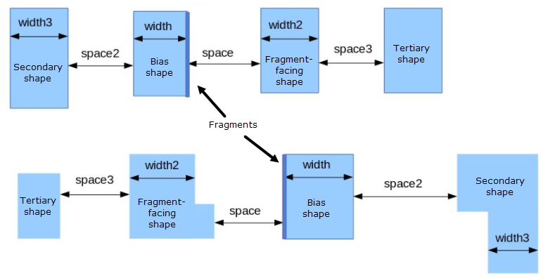
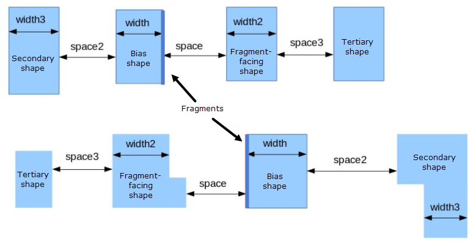

-table
BIASRULE keyword: Biasing Methods
Specifies the biasing of edges with a table-based method per provided space and width ranges.
Usage
-table [row metric col metric]
‘{’
col1 col2 colN [col_proj [angle] row_proj [angle]] ‘:’
row1 c1_r1_bias c2_r1_bias cN_r1_bias
row2 c1_r2_bias c2_r2_bias cN_r2_bias
rowN c1_rN_bias c2_rN_bias cN_rN_bias
‘}’
Arguments
- row metric col metric
An optional pair of metrics applied to the respective row and column that constrain specified values to a matrix of measurements. Row and column metrics provide measurement between all edge relationships and determine their assignment to either row or column within the table matrix. The default metrics are width and space for row and col, respectively. The row and column metrics provide all possible measurement relationships and are depicted in Figure 1.
enclosing
A measurement between the inside edge of the bias shape and outside edge of the overlapping shape The overlapping layer is declared by ‑overlapLayer.
enclosure
A measurement between the outside edge of the bias shape and inside edge of the overlapping shape. The overlapping layer is declared by -overlapLayer.
length1
A measurement of the fragment edge length.
overlap
Selects bias shapes overlapping any shape of a layer declared with ‑overlapLayer.
pitch
A measurement between the edge fragment of the bias shape to the inside edge of the fragment-facing shape. The pitch metric is measured perpendicular to the fragment edge.
sidepitch
A measurement between the inside edge of the bias shape side to the outside edge of an adjacent shape. The sidepitch metric is measured parallel to the fragment edge. The sidepitch metric is dependent on the value of -side_depth.
sidepitch2
A measurement between the outside edge of the bias shape side to the inside edge of an adjacent shape. The sidepitch2 metric is measured parallel to the fragment edge. The sidepitch2 metric is dependent on the value of ‑side_depth.
sidespace
A measurement between the outside edges of the bias and secondary shapes. The sidespace metric is dependent on the value of ‑side_depth.
space
A measurement between the edge fragment of the bias shape and outside edge of the fragment-facing shape. This is the default column metric.
space2
A measurement between the outside edges of the bias and secondary shapes.
space3
A measurement between the outside edges of the fragment-facing and tertiary shapes.
width
A measurement between the edge fragment of the bias shape and the facing inside edge of the same primary shape. The width metric is measured perpendicular to the fragment edge. This is the default row metric.
width2
A measurement of the width of the fragment-facing shape. The width2 metric is measured perpendicular to the fragment edge.
The metric measurement relationships are shown in the following figure:
Figure 1. Measurement Relationships 
- col1 ... colN
A series of required floating-point values in user units specifying boundaries of column measurements. These values must be unique and specified in ascending order. You must specify at least one column value. Where no column metric is specified, column defaults to the space metric.
- row1 ... rowN
A series of required floating-point values in user units specifying boundaries of row measurements. These values must be unique and specified in ascending order. You must specify at least one row value. Where no row metric is specified, row defaults to the width metric.
- c1_r1_bias ... cN_rN_bias
A series of required floating-point values in user units specifying biasing of the in_layer at the corresponding metric matrix of the table. Negative numbers cause biasing toward the interior of shapes. Positive numbers cause outward biasing.
- col_proj [angle constraint] row_proj [angle constraint]
An optional group of arguments specifying the column and row projection type, respectively, with their associated optional angle constraints.
col_proj, row_proj — Three projection types are provided:
OPPOSITE — Direct projection from edge to edge. This is default.
OPPOSITE EXTENDED value — Like OPPOSITE but with an additional lateral extension value. This permits the area of edge projection to be modified. The value may be either positive or negative.
EUCLIDEAN value — Distance determined by spherical radius from the shape edge.
angle constraint — The angle keyword and constraint pair provides a constraint to filter skewed edges to be excluded from measurement, and can only be specified in conjunction with row and column metrics. The angle keyword only applies to space and width metrics. The angle keyword and constraint must be specified after the projection keyword, the constraint comprising an operator separated from the angle value(s) by a space:
OPPOSITE angle > 15 OPPOSITE EXTENDED 0.1 angle >= 0 < 75
Description
A required keyword and matrix specifying space and width rules with their respective biasing values. For an example of a table specification and further detail how biasing is applied, refer to Example 1.
If no tag set is specified for -table, then only one table can be specified in which case the table applies biasing to all the fragments on in_layer.
No more than eight tables may be specified. In the first row of the table, a space and colon must appear at the end of the line or a parsing error results.
Examples
Example 1
This example of the table method demonstrates how to specify parameters. The values specified in the table are equivalent to the rules specified with the -rule method seen in Example 1.
-table { \
0.045 0.060 0.075 OPPOSITE OPPOSITE EXTENDED 0.020 :\
0.050 0.003 0.003 0.007 \
0.060 0.003 0.004 0.008 \
0.070 0.003 0.005 0.009 \
...
}The boundaries of the space measurement are 0.045, 0.060, and 0.075. The boundaries of the width measurement are 0.050, 0.060, and 0.070.
If space is less than the smallest space measurement boundary, or if width is less than the smallest width measurement boundary, no bias is applied. Given Example 1, no bias is applied if space is less than 0.045 or if width is less than 0.050.
If a space measurement is equal to a space measurement boundary, the bias corresponding to that boundary is applied. If a space measurement lies between two boundaries, the bias of the lower boundary is applied. Given Example 1, if space is equal to 0.060 and width is equal to 0.0515, a bias of 0.004 is applied.
If space is greater than or equal to the largest space measurement boundary, or if width is greater than or equal to the largest width space measurement, the bias corresponding to the largest space and width boundary is applied. Given Example 1, if space is equal to 0.077 and width is equal to 0.0735, then a bias of 0.009 is applied.
Example 2
Example Example 2 demonstrates how to specify row and col metrics for table method. The metrics specified are not default, and require specification to be applied to the table:
-table row width2 col space2 { \
0.050 0.070 0.09 : \
0.050 0.001 0.002 0.003 \
...
}